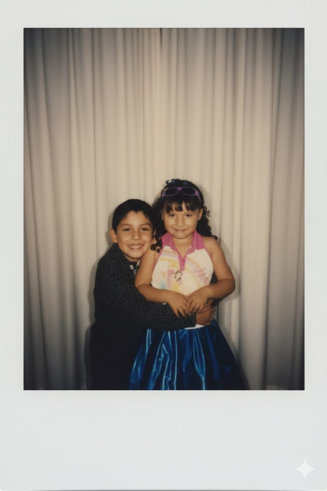

Haz clic para abrir esta carta especial...
¡La magia ha comenzado! Ahora disfruta del mensaje.
querida miauwi gracias por ser parte de mi vida, desde que tu estas aqui todo me a ido mejor se que aveces en nuestra relacion hay altos y bajos pero yo se que nuestro amor puede con todo igual yo se que no soy el mejor novio del mundo y tu te mereces lo mejor del mundo mundial ya que gracias a ti eh echo cosas que se que mi yo del pasado no haria, hace mucho tiempo te queria contar que quiero irte a visitar un dia de estos, por eso estoy haciendo todo lo de mis ahorros guardarlos full, en esta carta quiero decirte que yo estoy contigo en las buenas y en las malas por que cuando yo te veo triste trato de que no lo estes, invitandote hacer alguna cosa juntos , igual por que extraño ver una peli o jugar un videojuego juntos gracias por ser tu, una persona de lindo corazon y tan real, gracias a dios igual por haber juntado nuestro camino en ese momento que estabamos jugando y se que el destino nos guarda cosas buenas para el futuro te amo mi amor, y esta cancion y esta bella carta es para ti.
Tu Novio